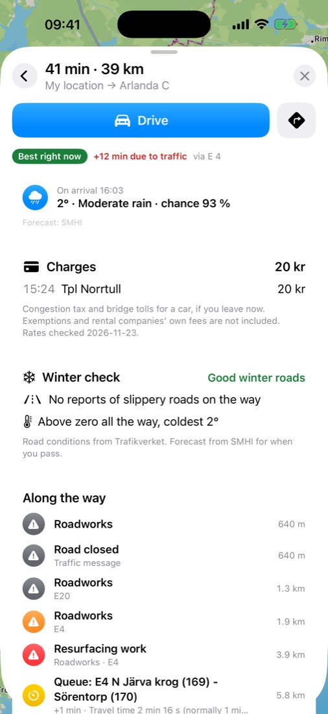

Haetaan Tukholman ajoneuvoja…
Ruotsi yhdellä kartalla, reaaliajassa.
360Maps on tehty Ruotsissa vierailua varten. Löydä nähtävyydet, matkusta busseilla, junilla ja veneillä, katso liikenne, sää ja pysäköinti ja saa ääniohjeet, kymmenellä kielellä iPhonella. Yllä oleva kartta näyttää Tukholman juuri nyt, piirrettynä samalla datalla kuin sovellus.
Mitä kartalla näet
Kytke päälle se, mitä tarvitset. Kaikki tulee viranomaisten ja liikennöitsijöiden avoimesta datasta ja päivittyy, kun katsot.
-
Nähtävyydet
Yli 340 nähtävää paikkaa Ruotsissa, joissa on kuva, aukioloajat, Look Around ja lyhyt teksti omalla kielelläsi. Kuvat tulevat Wikimedia Commonsista ja tekstit Wikipediasta.
-
Käsin valitut paikat
Paikkoja, jotka valitsemme vierailijoille, kuten italialaiset espressobaarit, joita Tukholman italialaiset suosittelevat. Ne näkyvät aina, zoomaustasosta riippumatta.
-
Ravintolat, kahvilat ja baarit
Kukin omalla värillään, aukioloaikoineen, ja lista, kun napautat niiden ryhmää. Noin 20 000 paikkaa kaikkialla Ruotsissa.
-
Apteekit ja päivystys
Apteekit ja sairaaloiden päivystyspoliklinikat kaikkialla Ruotsissa, aukioloaikoineen. Hätätilanteessa soita numeroon 112.
-
Uimapaikat, luonto ja revontulet
Rannat päivän vedenlämpötiloineen, kansallispuistot, luonnonsuojelualueet ja luistelukentät sekä mahdollisuus nähdä revontulia.
-
Bussit, metro, junat ja veneet
Ajoneuvot liikkuvat kartalla linjanumeronsa kanssa, 15 läänissä. Punainen on bussi, sininen metro, violetti juna ja turkoosi vene.
-
Jonot ja matka-ajat
Mitatut matka-ajat Tukholman pääteillä ja tunneleissa, joka minuutti. Jono näkyy muodossa +2 minuuttia normaaliin verrattuna.
-
Ajokeli
Lumi, loska ja jää teillä viivoina sekä tieto siitä, mitä tiellä on ja milloin se on aurattu.
-
Sadetutka
Ajankohtainen sadanta SMHI:n säätutkasta, viiden minuutin välein. Sininen on heikkoa, keltainen ja punainen voimakasta.
-
Häiriöt ja tietyöt
Onnettomuudet, sulut ja tietyöt Ruotsin liikennevirastolta (Trafikverket), paikka ja aika mukaan lukien.
-
Liikennekamerat
Napauta kameraa nähdäksesi tien. Kuva päivittyy itsestään, kun katsot.
-
Lautat ja laivat
Ruotsin liikenneviraston (Trafikverket) tielauttojen seuraava lähtö sekä merellä liikkuvat laivat.
-
Pysäköinti perillä
Kun suunnittelet automatkaa, näet pysäköinnin matkakohteesi lähellä, paikkojen määrän ja hinnan. Vapaat paikat näkyvät siellä, missä kaupunki jakaa ne.
-
Liikennevalot tiellä
Missä seuraava liikennevalo on, kun ajat. Väri ja lähtölaskenta tulevat, kun kaupungit jakavat signaalidatansa avoimesti.
-
Poliisi, Krisinformation ja SMHI
Tapahtumat siellä, missä olet, tärkeät yleiset tiedotteet ja säävaroitukset.
Tältä se näyttää
Kuvia sovelluksesta, otettu oikealla datalla. Kuvakaappaukset näyttävät ruotsinkielisen version.


Paikasta A paikkaan B
- Auto
- Joukkoliikenne
- Pyörä
- Kävely
Valitse, miten haluat matkustaa. 360Maps vertaa reittejä liikenteeseen juuri nyt ja näyttää, mitä matkan varrella on: jonot, ajokeli, tietyöt, lautat ja liikennevalot. Joukkoliikenteellä saat lähdöt, myöhästymiset ja vaihdot kaikkialla Ruotsissa.
Auto-, pyörä- tai kävelymatkalla seuraava käännös luetaan ääneen, myös näytön ollessa lukittuna. Jos käännyt väärään suuntaan, sovellus löytää uuden reitin, ja jos se löytää vähintään kolme minuuttia nopeamman, se kertoo siitä. Perillä näet, minne voit pysäköidä.
Päivä ulkona

Yllätä minut
Sovellus suunnittelee päivän sijaintisi mukaan: nähtävyyksiä ja puistoja sekä lounas ja kahvi avoinna olevissa paikoissa. Valitse kävely, pyörä tai joukkoliikenne ja sekoita, kunnes päivä sopii sinulle.
Museot, linnat ja kirkot sijoitetaan ennen kello 17:00, koska sovellus ei tunne niiden aukioloaikoja.
Aiotko ehtiä bussiin tai junaan? Napauta lähtöä ja valitse ”Perille ajoissa”, niin sovellus kertoo, milloin sinun pitää lähteä.
Ilmainen ja 360Maps Plus
Kartta kaikkine tasoineen, haku, joukkoliikenne, pyöräily, kävely, ”Yllätä minut” ja automatkan reitin suunnittelu ovat ilmaisia. Myös kolme ensimmäistä matkaasi autonavigoinnilla ovat ilmaisia.
360Maps Plus -palvelun mukana saat autonavigoinnin: käännös käännökseltä ääneen luettuna, varoitukset jonoista, jäästä ja tietöistä sekä uusi reitti, kun liikenne muuttuu. Ja tämän:

Mitä matka maksaa, ja talvitarkistus
Ruuhkavero ja siltamaksut autoreitilläsi, laskettuna sille hetkelle, kun ohitat ne, sekä se, mitä maksaa, jos lähdet myöhemmin.
1. marraskuuta – 30. huhtikuuta: jää ja lumi matkan varrella, lämpötila siellä, missä olet perille päästyäsi, ja SMHI:n varoitukset.

Pysäköintisäännöt Tukholmassa
Zoomaa lähemmäs, niin reunakivet väritetään: vihreä, missä saa pysäköidä, oranssi, missä katu siivotaan vuorokauden sisällä, punainen, missä pysäköinti on nyt kielletty, ja harmaa, missä paikka on varattu.
Kaupungin määräysten mukaan. Kadun varrella olevat merkit ovat voimassa.

Missä auto seisoo
Tallenna, missä auto on, niin sovellus näyttää, mitä juuri siinä pätee: hinta nyt, koko taksa ja milloin katu siivotaan.
Muistuta minua antaa ilmoituksen edellisenä iltana ja tuntia ennen kuin katujen siivous alkaa.
Plus on saatavilla yhden viikon (ei tilaus), kuukauden, vuoden tai kertaostona. App Store näyttää hinnan maassasi. Käyttöehdot.
Avoin data
Kaikki kartalla oleva tulee Ruotsin viranomaisten ja liikenneyhtiöiden avoimesta datasta.
Lähteiden joukossa: Trafiklab ja Samtrafiken, SL, Ruotsin liikennevirasto, SMHI, Ruotsin poliisi, Krisinformation.se, Tukholman kaupunki, Wikipedia ja © OpenStreetMap contributors. Kaikki lähteet ja lisenssit on lueteltu sovelluksessa kohdassa Lähteet, lisenssit ja tietosuoja.
Tuki
Löysitkö virheen, puuttuuko kartalta jotain vai onko sinulla kysyttävää sovelluksesta? Lähetä sähköpostia osoitteeseen raztechsupport@icloud.com, niin vastaamme. Vastauksia yleisiin kysymyksiin on tukisivulla.